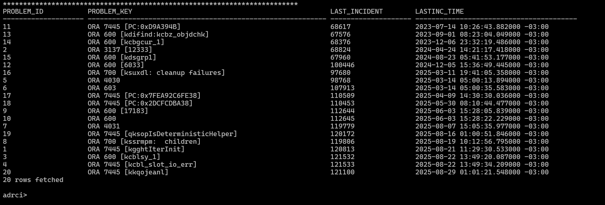

üîé 6. Consulte o incidente espec√≠fico
Escolha um ID listado no passo anterior (ex: 121100) e use:
show incident -mode detail -p "incident_id=121100"
Esse comando mostra o erro detalhado e o caminho completo para o arquivo de trace.

Atualizado: Agosto/2025
Se você já se deparou com um erro do tipo ORA-600 ou outro erro interno do Oracle, sabe como pode ser trabalhoso buscar essas informações no alert.log.
O ADRCI (Automatic Diagnostic Repository Command Interface) é uma ferramenta da Oracle que permite investigar erros com muito mais facilidade, exibindo histórico de problemas, datas e caminhos completos para os traces.
Antes de iniciar o ADRCI, defina o caminho base do Oracle:
export ADR_BASE='/u01/app/oracle'
Execute o binário diretamente:
$ORACLE_HOME/bin/adrci
Dentro do ADRCI, digite:
show home
O comando retornará algo parecido com:
Escolha o diretório referente ao seu banco, geralmente algo como diag/rdbms/orcl/orcl.
set home diag/rdbms/orcl/orcl
show problem
Esse comando exibe todos os erros registrados no banco, com seus IDs e datas.
Escolha um ID listado no passo anterior (ex: 121100) e use:
show incident -mode detail -p "incident_id=121100"
Esse comando mostra o erro detalhado e o caminho completo para o arquivo de trace.
Copie o caminho do trace retornado e utilize:
show trace /u01/app/oracle/diag/rdbms/orcl/orcl/trace/pegada_ora_31685.trc